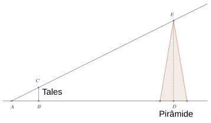
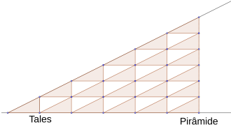
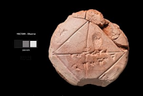
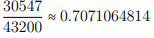
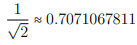

Como a geometria chegou a Grécia
19 de junho de 2022
Começo esse post com a seguinte pergunta: O que é a geometria? Ao entrevistar um aluno do Ensino Médio, ele respondeu: “A parte da matemática que estuda o tamanho e volume das figuras. Para sermos mais rigorosos busquemos a definição nos dicionários, que pode ser: “Parte da matemática que estuda rigorosamente o espaço e as formas que nele podem estar" . Apesar das diferenças entre as definições é notável que o aluno entende algo sobre geometria, o que não é surpresa, pois ela faz parte do currículo escolar das escolas brasileiras. Porém uma coisa o nosso entrevistado não soube responder corretamente: De onde vem a geometria?O primeiro lugar em sua mente foi a Grécia, mas está errado. Então de onde vem? Porque pensamos na Grécia como lugar de origem? Como chegou lá?Se leu o título sabe que é essa pergunta que iremos responder.
ORIGEM
O exato momento de quando a geometria surgiu é um mistério, diversos povos ao longo da história tiveram problemas que para resolvê-los foram usados conhecimentos geométricos. Para nós o importante é saber como esses conhecimentos chegaram à Grécia, lugar onde esse conhecimento se desenvolveu. Para essa história tudo começa com o povo que construiu as pirâmides?
Os egípcios possuíam conhecimentos geométricos, devido a necessidades como o cálculo de áreas para cobrança de impostos. Agora como esse conhecimento chegou à Grécia? Tudo começou com Tales de Mileto. Existem histórias sobre isso, em o Sumário de Proclo ou em Vida dos Filósofos Ilustres. Ambos contam que Tales foi à Grécia e lá adquiriu conhecimentos que seriam passados para os que vieram depois dele.
IGUALDADE DAS SOMBRAS
O que Tales fez foi utilizar a semelhança de triângulos retângulos. Porém devido a carência de fontes, registros históricos da época é incerto como Tales chegou a essa conclusão, porém uma hipótese é a partir da igualdade das sombras. Se tivermos um triângulo retângulo ABC que representa a sombra que possui o mesmo tamanho de Tales e um triângulo retângulo ADE que representa a altura da pirâmide.
Para descobrir a altura basta preenchermos o triângulo ADE com várias cópias triângulos ABC. Assim é possível concluir que a altura da pirâmide pode ser calculada a partir do comprimento de sua sombra, que foi definido em termos da sombra de Tales, ou triângulo ABC.
Lembrando que a sombra de Tales deve ter comprimento igual a sua altura.
PITAGURAS
Depois de Tales tivemos outros gregos interessados na matemática, um deles foi Pitágoras. Em o sumário de Proclo é dito que:
“Pitágoras transformou o estudo da matemática em uma forma de educação liberal, examinando seus princípios desde o começo, explorando seus teoremas de maneira puramente imaterial e intelectual”
Há muita imprecisão a certa do que Pitágoras realmente descobriu, pois seus seguidores atribuem a ele muitos feitos. Uma curiosidade é que foi descoberto uma tabuleta de argila, escrita por alguém há cerca de 1000 anos antes de Pitágoras.
Nela está escrito, de acordo com umas das interpretações, descreve um quadrado de lado 1 /2 e sua diagonal:
Sendo essa uma excelente aproximação para:
O que é incrível, pois se for verdade isso seria uma evidência de que Pitágoras não descobriu que a diagonal de um quadrado de lado ½ é
Para essa e mais curiosidades acerca da geometria, recomendo fortemente a leitura da apostila do professor Collier, que está em referências.